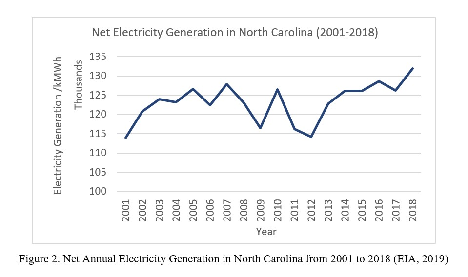
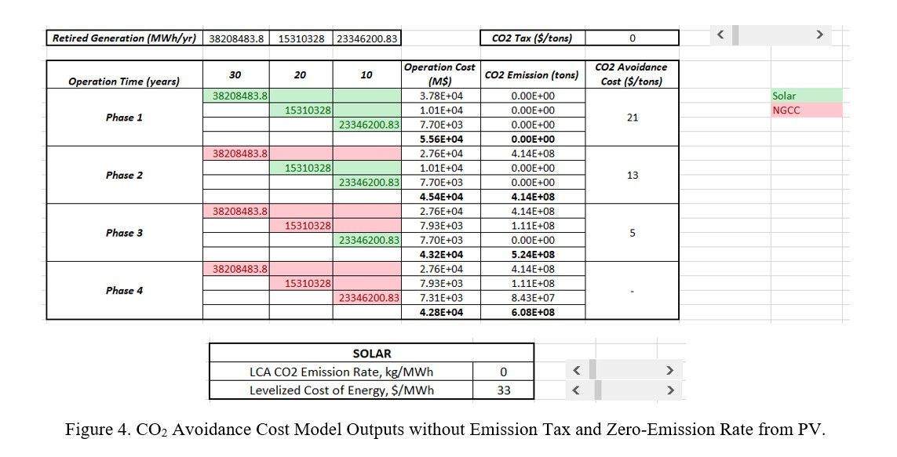
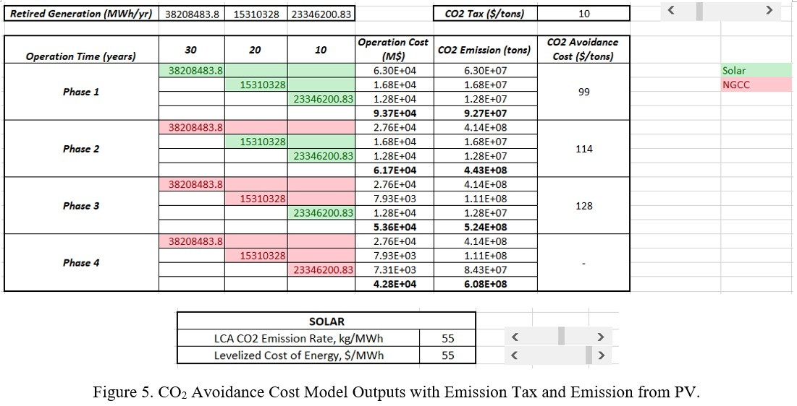

CO2 Avoidance Cost Analysis of Replacing Retired Fossil-Fuel Plants in North Carolina

Problem Statement
Department of Environmental Quality in North Carolina released the Clean Energy Plan in 2019 to significantly reduce greenhouse gas over the next decade. This plan sets goals for the electric power sector to achieve a 70% reduction by 2030 below the 2005 level and to realize carbon neutrality by 2050 (NCDEQ, 2019). A talk presented in a local public radio given by Billy Pizer, a professor from Duke University, mentioned that the earlier North Carolina transit to renewable energy, the more benefits that people will gain in the future (Magus, et al., 2019). To quantitively evaluate this opinion, an Excel model is built to analyze whether a lower CO2 Avoidance Cost can be attained if North Carolina takes earlier actions to replace retired fossil fuel power plants with renewable ones. Solar plants with PV generators are used as an example for renewable energy plants, while NGCC plants are set as the default choice if not using renewable energy.
This model evaluated the difference between three scenarios in CO2 Avoidance Cost, i.e. increase in cost over the decrease in GHG emissions. These three scenarios differ in the starting point of replacing retired fossil fuel plants with solar plants. The results show that adopting solar plants in earlier periods will result in a relatively higher CO2 Avoidance Cost. However, if CO2 tax is taken into consideration, earlier replacement with solar plants will have prominent financial benefits. The data source of this model is supplied by eGrid2016 (EPA, 2018) and 2019 Annual Technology Baseline (ATB) from NREL (NREL, 2019).
Introduction
 According to generation data collected from eGrid2016, power plants
in North Carolina with oil, natural gas, and coal as primary fuel
will have a retirement cycle of about 10 years if assuming an
average 30-year lifespan (Figure 2). The retirement stages are
2020-2030, 2030-2040 and 2040-2050 respectively (namely Phase 1,
2 and 3). This indicates that in the future decades, North Carolina
will need to replace those retired conventional power plants with
new plants to satisfy the state’s electricity demand.
According to generation data collected from eGrid2016, power plants
in North Carolina with oil, natural gas, and coal as primary fuel
will have a retirement cycle of about 10 years if assuming an
average 30-year lifespan (Figure 2). The retirement stages are
2020-2030, 2030-2040 and 2040-2050 respectively (namely Phase 1,
2 and 3). This indicates that in the future decades, North Carolina
will need to replace those retired conventional power plants with
new plants to satisfy the state’s electricity demand.
Assumptions
This model is built based on four assumptions which are made with regard to lifespan of present fossil fuel plants, the electricity demand of the state, alternatives for retired plants replacement, and fuel price:
- Life Span: the average life span for fossil fuel plants is assumed to be 30 years.
- Electricity Demand: Electricity demand in North Carolina is assumed to remain at a stable level in the future decades according to historical data (Figure 1). Thus, the capacity of plants to be built is assumed to be equal to that of the retired plants.
- Alternatives: The retired plants will be renewed as natural gas plants (NGCC) without carbon capture system if renewable strategies are not taken; otherwise, those natural gas plants will be replaced with renewable power plants; in this case, technical specifications of a typical solar plant are used as an example in calculations.
- Fuel Price: Natural gas prices in the US will remain at the present level for future decades.
Method
Information about plants currently online in North Carolina is obtained from eGrid2016. The information includes primary fuel type, net annual generation and generator online year. Fossil fuel-fired plants are filtered by primary fuel types as natural gas, coal, and oil. With an assumption of an average lifespan of 30 years, the retirement year of fossil fuel-fired power plants are calculated. Those fossil fuel plants can be categorized by retirement year into three 10-year phases from 2020 to 2050.
Three scenarios of replacing retired plants with solar plants, i.e. Phase 1, 2 and 3, are discussed in a time range of 2040-2060. The operation length will be 30, 20 and 10 years respectively for the plants built in the three phases. Once being built, power plants will not be replaced within the time range of this model.
The specifications and parameters of a typical NGCC plant (Table 1) and a solar plant are used as proxies for the calculation. The total cost and CO2 emission of the scenario where all retired plants are replaced with NGCC plants are taken as a baseline in order to calculate CO2 Avoidance Cost in the range of 2030 to 2060. For NGCC plants, the cost is consisted of fuel cost and capital cost, while for solar plants, the Levelized Cost of Energy (LCOE) is used directly to calculate the total cost (Figure 3). CO2 Avoidance Cost is calculated through the equation as:
The inputs of solar plants are considered flexibly in the model. The value of life cycle GHG emissions rate can be changed from 0 – 100 kg/MWh, where 0 represents LCA is not taken into consideration. For the LCOE cost of solar plants, the value can be changed from $30/MWh to $55/MWh according to the data of real solar farms in the ATB database. Though the LCOE costs listed in ATB have negligible variation with time of 30 years, the constant LCOE cost used for calculation in the model should be interpreted as an average value through the lifespan. Moreover, CO2 tax can be chosen with a range from $0/tons to $50/tons to discuss various scenarios.
Results and Discussion
From the results in Figure 4, it can be concluded that replacing retired plants with solar plants in an earlier stage will lead to higher marginal GHG reduction costs if emission tax and LCA emission are not considered. The CO2 Avoidance Cost in Phase 1 is approximately 4 times higher than that in Phase 3. It indicates that when no emission penalty like CO2 tax is required for power plants, even though solar power plants are at a low-cost level and LCA emissions are not considered, an earlier action to adopt renewable energy will not result in lower marginal GHG emission reduction cost.
Figure 5 shows the model output with emission tax as $10/tons, LCA emission rate of solar plants as 55kg CO2/MWh and LCOE cost of solar plants as $55/MWh. Those values are chosen as a representation of normal conditions. The results show that after inducing emission tax, CO2 Avoidance Cost in three phases all increase greatly. In this case, an earlier action to replace retired plants with solar plants will result in lower CO2 Avoidance Cost.
According to the model outputs in two scenarios discussed above, it can be concluded that when emission tax is induced, an earlier action to adopt renewable energy plants will bring financial benefits compared with conventional natural gas plants. The results presented by the scenario without emission tax and LCA emission are not opposed to the potential benefits of renewable energy because this model does not evaluate the loss from environmental damage. It should also be noted that risks brought by extreme weather, transmission limits and siting limits will increase the complexity of cost analysis of renewable energy. Instead, the discussion of this model is limited when CO2 Avoidance Cost is taken as the measurement.
References
- EIA. 2019. ELECTRICITY DATA BROWSER: EIA. [Online] 2019. https://www.eia.gov/electricity/data/browser/.
- EPA. 2018. Emissions & Generation Resource Integrated Database (eGRID). EPA. [Online] 2018. https://www.epa.gov/energy/emissions-generation-resource-integrated-database-egrid.
- Magus, Amanda, and Stasio, Frank. 2019. A Peek Into North Carolina’s Clean Energy Future. WUNC 91.5. [Online] August 21, 2019. [Cited: September 21, 2019.] https://www.wunc.org/post/peek-north-carolina-s-clean-energy-future.
- NCDEQ. 2019. North Carolina Clean Energy PlanTransitioning to a 21st Century Electricity System. [Online] October 2019. https://deq.nc.gov/energy-climate/climate-change/nc-climate-change-interagency-council/climate-change-clean-energy-16.
- NREL. 2019. Annual Technology Baseline: Electricity. [Online] 2019. https://atb.nrel.gov/.